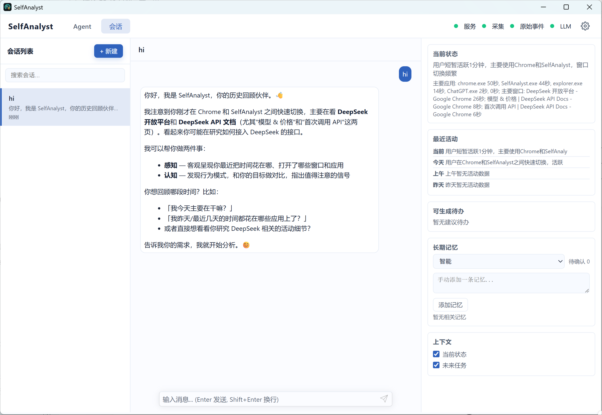

Recover your context
Keep track of apps, window titles, and active time. Use activity summaries to understand what you've been doing and where your time went.
See where your time went. Pick up your train of thought.
Turn everyday activity into a conversation with your personal analysis assistant.
Runs on your computer · Available in English and Simplified Chinese

You don't have to reconstruct your day from memory. Start with your activity, conversations, and the context you've kept.
Keep track of apps, window titles, and active time. Use activity summaries to understand what you've been doing and where your time went.
Explore past activity in an Agent conversation. Bring context to your patterns and next steps. Configure a model provider in desktop settings to get started.
Connect past context with Wiki aggregation and long-term memory. Optionally collect file metadata from folders you choose to follow file changes.
Activity and conversations are stored on your computer. Collection and optional online services have distinct settings and boundaries.
Full privacy details (Chinese) ↗Local-first does not mean fully offline. When enabled, LLM, embedding, and web search services receive relevant inputs. File metadata returned by tools may also enter conversations with your configured model.
Get the Windows x64 installer from Releases, or extract and run the portable package. Both include a Java runtime. The desktop interface uses your system's WebView2 Runtime.
Open Settings → Model settings in the desktop app. Enter your endpoint, model, and API key, test the connection, and save. Enter keys only in the desktop app.
Model setup guide (Chinese) ↗After some activity, ask “What have I been working on today?” File collection is off by default; enable it and choose folders if needed. Closing the window hides it to the tray. Use the tray menu to quit.
For Windows 10 / 11 x64. Choose your package on GitHub Releases.
For everyday use. Follow the setup wizard. Your data lives in the application data directory and is preserved across upgrades and uninstallation.
Choose installer on Releases ↗Extract and run. Your data lives in the data folder beside the app. Move or back up the entire folder to keep the app and your data together.
Choose portable on Releases ↗SHA-256 checksum files are included in Releases. All versions and release notes ↗